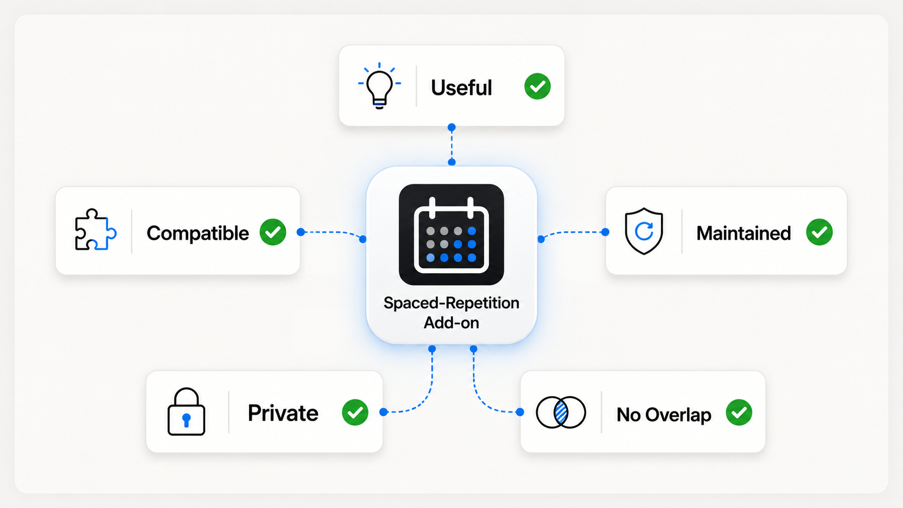

Searching for the “best Anki addons” usually produces a long list. A better question is: which part of your current study process is creating the most friction? Once you know that, choosing an Anki addon becomes much easier.
What makes an Anki addon genuinely useful?
Anki already handles the central job: scheduling reviews so that you retrieve information over time. A useful add-on should strengthen the work around that loop — creating better cards, understanding difficult material, starting on time, or interpreting your data — without replacing retrieval practice itself.
Use five tests before installing anything:
- It solves one named problem. “I lose focus during long reviews” is actionable; “I want more features” is not.
- It stays close to the review workflow. Every extra window and context switch creates a chance to drift.
- It is compatible with your Anki version. Add-ons can interact with deep parts of Anki and may need updates after Anki changes.
- Its data behavior is understandable. Know what leaves your device, especially when AI or cloud services are involved.
- You can tell whether it helped. Look for less setup time, fewer abandoned sessions, clearer cards, or a more stable review habit.

The most useful Anki addon categories
| Category | Best for | Watch out for |
|---|---|---|
| Card creation | Reducing repetitive formatting or generating first drafts | Large volumes of low-quality cards |
| AI assistance | Explanations, examples, question variants, and mnemonics | Reading an answer instead of retrieving it |
| Focus and planning | Starting sessions, timeboxing, and balancing subjects | Over-planning instead of reviewing |
| Statistics | Finding patterns in retention, time, and workload | Reacting to noisy daily numbers |
| Visual organization | Connecting topics and seeing relationships | Building elaborate maps that are never reviewed |
| Interface improvements | Reducing friction in a repeated action | Cosmetic complexity with no learning benefit |
Card creation and AI
AI can be valuable when it helps you transform material you already understand into a better prompt, or when it explains why an answer is wrong. It becomes counterproductive when it mass-produces cards you have never checked. A strong Anki AI addon workflow keeps you responsible for the final question, answer, and source.
Focus, timers, and study planning
A focus add-on is useful when the problem is not knowing what to review, but beginning and staying present. A timer inside Anki can reduce the temptation to open another productivity app. A planner should be lightweight: choose the next subject, set a realistic block, then begin. Our Anki Pomodoro guide shows how to match block length to new cards, reviews, and difficult material.
Statistics and retention
More graphs are not automatically better. The useful statistics are the ones that change a decision: whether your workload is sustainable, whether mature-card retention is stable, or whether certain hours produce slow, inaccurate reviews. Read trends over weeks or months, not a single bad day. See the detailed guide to Anki retention statistics.
Compatibility and safety before installation
The official Anki Manual notes that add-ons can modify arbitrary parts of Anki and that an Anki update can break compatibility with older add-ons. That does not make add-ons unsafe by default; it means you should treat them as software, not decoration.
- Install from the official AnkiWeb listing or a source you trust.
- Read the supported Anki versions and recent change notes.
- Keep Anki’s automatic backups and make an extra backup before a major update.
- If something breaks, restart Anki with add-ons disabled and re-enable them one by one.
- Be especially careful with multiple add-ons that alter scheduling or the same interface area.
How to install an Anki addon
In Anki Desktop, open Tools → Add-ons → Get Add-ons. Paste the numeric code from the add-on’s AnkiWeb page, confirm, and restart Anki when prompted. For SynapsePro, the add-on code is 236979321.
After restarting, verify the new feature appears and test it on a normal study session before changing several settings at once. If you later remove an add-on, use the Add-ons manager rather than deleting files manually.
When an integrated workspace makes sense
Separate specialist add-ons are ideal when you need one narrow capability. An integrated Anki addon becomes attractive when the recurring problem is context switching: opening a timer, notes app, browser, AI chat, and statistics dashboard around every study session.
SynapsePro brings those surrounding tools into one sidebar and dashboard while leaving Anki’s review loop familiar. The goal is not to make every study session more elaborate. It is to make the useful actions easier to reach and the distracting ones easier to avoid.
A simple decision checklist
- Write down the single biggest friction point in your current Anki week.
- Choose one add-on category that directly addresses it.
- Check compatibility, source, privacy, and recent maintenance.
- Install one tool and keep the default setup simple.
- Review the result after one week: did learning become clearer, faster, or more consistent?
The best Anki addons are not the ones with the longest feature list. They are the ones you stop noticing because the study process simply works better.
Try a focused all-in-one setup.
SynapsePro combines AI help, planning, Pomodoro focus, gamification, mind maps, and richer statistics inside Anki.
Get SynapsePro free